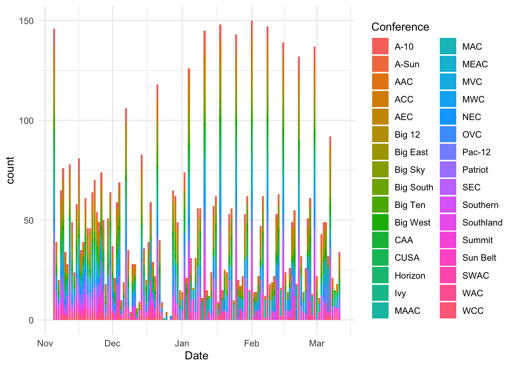
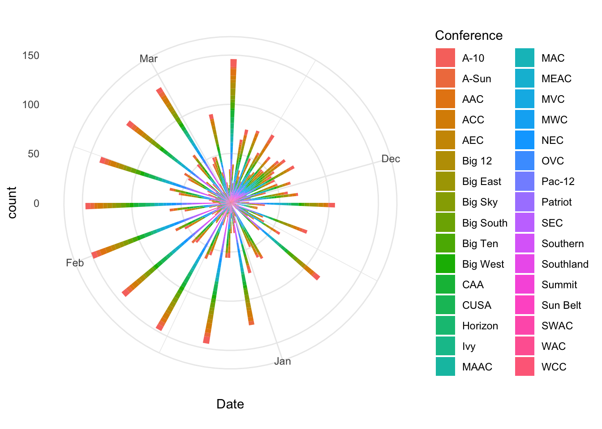
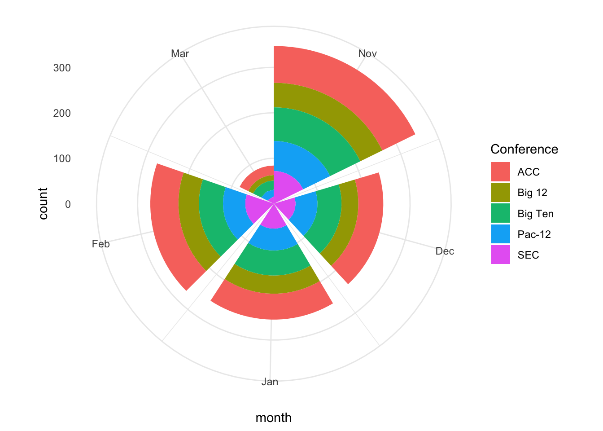
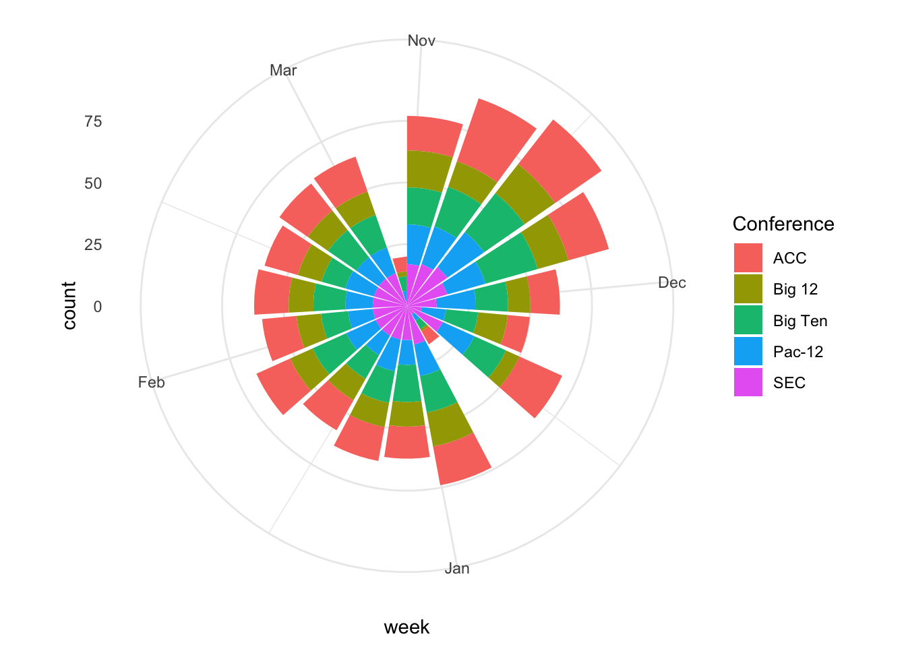
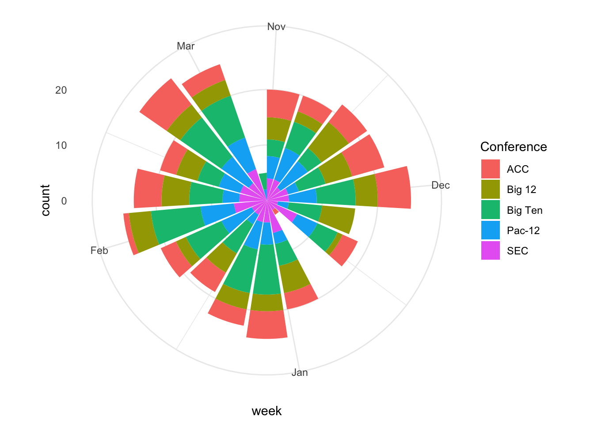

library(tidyverse)
library(lubridate)17 Circular bar charts
At the 27:36 mark in the Half Court Podcast, former Omaha World Herald Writer Chris Heady said “November basketball doesn’t matter, but it shows you where you are.”
It’s a tempting phrase to believe, especially a day after Nebraska lost the first game of the Fred Hoiberg era at home to a baseball school, UC Riverside. And it wasn’t close. The Huskers, because of a total roster turnover, were a complete mystery before the game. And what happened during it wasn’t pretty, so there was a little soul searching going on in Lincoln.
But does November basketball really not matter?
Let’s look, using a new form of chart called a circular bar plot. It’s a chart type that combines several forms we’ve used before: bar charts to show magnitude, stacked bar charts to show proportion, but we’re going to add bending the chart around a circle to add some visual interstingness to it. We’re also going to use time as an x-axis value to make a not subtle circle of time reference – a common technique with circular bar charts.
We’ll use a dataset of every college basketball game last season.
For this walkthrough:
Load your libraries.
And load your data.
logs <- read_csv("data/logs20.csv")Rows: 11097 Columns: 43
── Column specification ────────────────────────────────────────────────────────
Delimiter: ","
chr (6): HomeAway, Opponent, W_L, Team, Conference, season
dbl (35): Game, TeamScore, OpponentScore, TeamFG, TeamFGA, TeamFGPCT, Team3...
lgl (1): Blank
date (1): Date
ℹ Use `spec()` to retrieve the full column specification for this data.
ℹ Specify the column types or set `show_col_types = FALSE` to quiet this message.17.1 Does November basketball matter?
So let’s test the notion of November Basketball Doesn’t Matter. What matters in basketball? Let’s start simple: Wins.
Sports Reference’s win columns are weird, so we need to scan through them and find W and L and we’ll give them numbers using case_when. I’m also going to filter out tournament basketball.
winlosslogs <- logs %>%
mutate(winloss = case_when(
grepl("W", W_L) ~ 1,
grepl("L", W_L) ~ 0)
) Now we can group by date and conference and sum up the wins. How many wins by day does each conference get?
dates <- winlosslogs %>%
group_by(Date, Conference) %>%
summarise(wins = sum(winloss))`summarise()` has grouped output by 'Date'. You can override using the
`.groups` argument.Earlier, we did stacked bar charts. We have what we need to do that now.
ggplot() +
geom_bar(
data=dates,
aes(x=Date, weight=wins, fill=Conference)
) +
theme_minimal()
Eeek. This is already looking not great. But to make it a circular bar chart, we add coord_polar() to our chart.
ggplot() +
geom_bar(
data=dates,
aes(x=Date, weight=wins, fill=Conference)
) +
theme_minimal() +
coord_polar()
Based on that, the day is probably too thin a slice, and there’s way too many conferences in college basketball. Let’s group this by months and filter out all but the power five conferences.
p5 <- c("SEC", "Big Ten", "Pac-12", "Big 12", "ACC")To get months, we’re going to use a function in the library lubridate called floor_date, which combine with mutate will give us a field of just months.
wins <- winlosslogs %>%
mutate(month = floor_date(Date, unit="months")) %>%
group_by(month, Conference) %>%
summarise(wins=sum(winloss)) %>%
filter(Conference %in% p5) `summarise()` has grouped output by 'month'. You can override using the
`.groups` argument.Now we can use wins to make our circular bar chart of wins by month in the Power Five.
ggplot() +
geom_bar(
data=wins,
aes(x=month, weight=wins, fill=Conference)
) +
theme_minimal() +
coord_polar()
Yikes. That looks a lot like a broken pie chart. So months are too thick of a slice. Let’s use weeks in our floor date to see what that gives us.
wins <- winlosslogs %>%
mutate(week = floor_date(Date, unit="weeks")) %>%
group_by(week, Conference) %>%
summarise(wins=sum(winloss)) %>%
filter(Conference %in% p5) `summarise()` has grouped output by 'week'. You can override using the
`.groups` argument.ggplot() +
geom_bar(
data=wins,
aes(x=week, weight=wins, fill=Conference)
) +
theme_minimal() +
coord_polar()
That looks better. But what does it say? Does November basketball matter? What this is saying is … yeah, it kinda does. The reason? Lots of wins get piled up in November and December, during non-conference play. So if you are a team with NCAA tournament dreams, you need to win games in November to make sure your tournament resume is where it needs to be come March. Does an individual win or loss matter? Probably not. But your record in November does.
17.2 Does it show you where you are?
So here is the problem we have:
- We have data for every game. In the past, we were able to calculate the team wins and losses because the way the data records them is the Team is the main team, and they win or lose. The Opponent is recorded, but the Opponent has the mirror image of this game as well, where they are the Team. So essentially every game is in here twice – one for each team that plays in the game.
- We need to attach the Opponent’s winning percentage to each game so we can decide if it’s a quality win for Team.
- The Team name is not an exact copy of the Team name. So we can’t join them using it.
So what we have to do is invert the process that we’ve done before. We need to group by the Opponent – because the names will be consistent then – and we need to invert the wins and losses. A win in the W_L column is a win for the Team. That means each loss in the W_L column is a WIN for the Opponent.
Once we invert, the data looks very similar to what we’ve done before. One other thing: I noticed there’s some tournament games in here, so the filter at the end strips them out.
oppwinlosslogs <- logs %>%
mutate(winloss = case_when(
grepl("W", W_L) ~ 0,
grepl("L", W_L) ~ 1)
) %>%
filter(Date < "2020-03-19")So now we have a dataframe called oppwinlosslogs that has an inverted winloss column. So now we can group by the Opponent and sum the wins and it will tell us how many games the Opponent won. We can also count the wins and get a winning percentage.
oppwinlosslogs %>%
group_by(Opponent) %>%
summarise(games=n(), wins=sum(winloss)) %>%
mutate(winpct = wins/games) -> opprecordNow we have a dataframe of 659 opponent winning records. Wait, what? There’s 353 teams in major college basketball, so why 659? If you look through it, there’s a bunch of teams playing lower level teams. Given that they are lower level, they’re likely cannon fodder and will lose the game, and we’re going to filter them out in a minute.
Now we can join the opponent winning percentage to our winlosslogs data so we can answer our question about quality wins.
winlosslogs <- logs %>%
mutate(winloss = case_when(
grepl("W", W_L) ~ 1,
grepl("L", W_L) ~ 0)
) %>%
filter(Date < "2020-03-19")winlosslogs %>%
left_join(opprecord, by=("Opponent")) -> winswithopppctNow that we have a table called winswithopppct, we can filter out teams non power 5 teams and teams that won less than 60 percent of their games and run the same calculations in the book.
p5 <- c("SEC", "Big Ten", "Pac-12", "Big 12", "ACC")winswithopppct %>%
filter(winpct > .6) %>%
mutate(week = floor_date(Date, unit="weeks")) %>%
group_by(week, Conference) %>%
summarise(wins=sum(winloss)) %>%
filter(Conference %in% p5) -> qualitywins`summarise()` has grouped output by 'week'. You can override using the
`.groups` argument.Now with our dataframe called qualitywins, we can chart it again.
ggplot() +
geom_bar(
data=qualitywins,
aes(x=week, weight=wins, fill=Conference)
) +
theme_minimal() +
coord_polar()
Look at this chart and compare it to the first one.